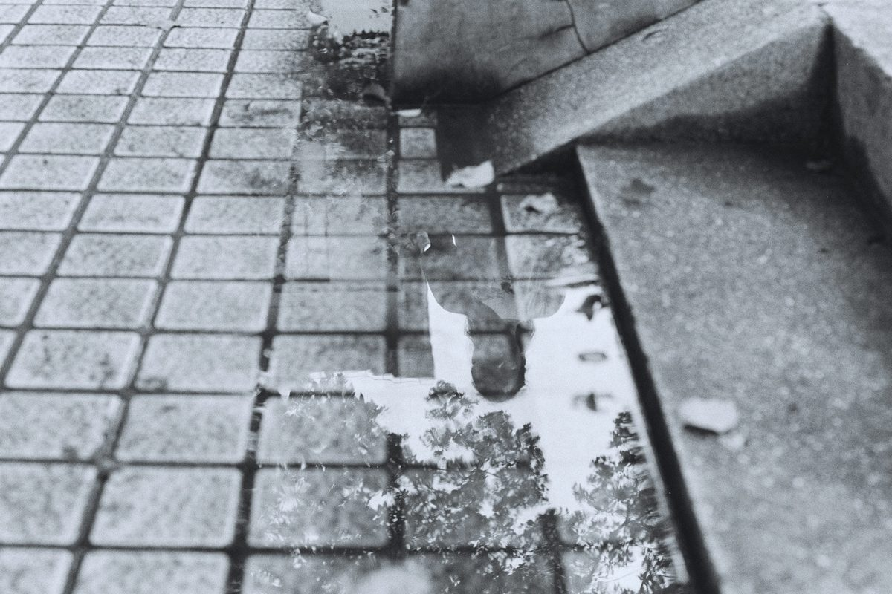
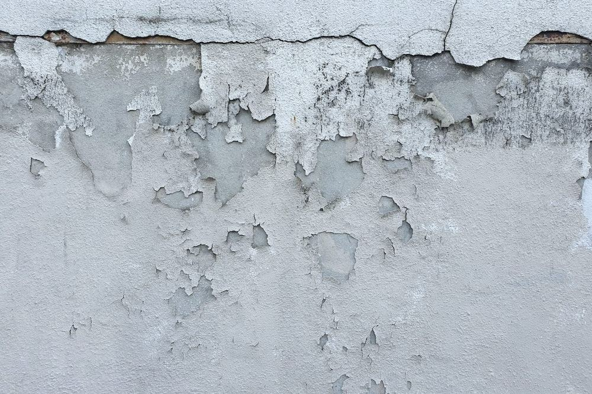
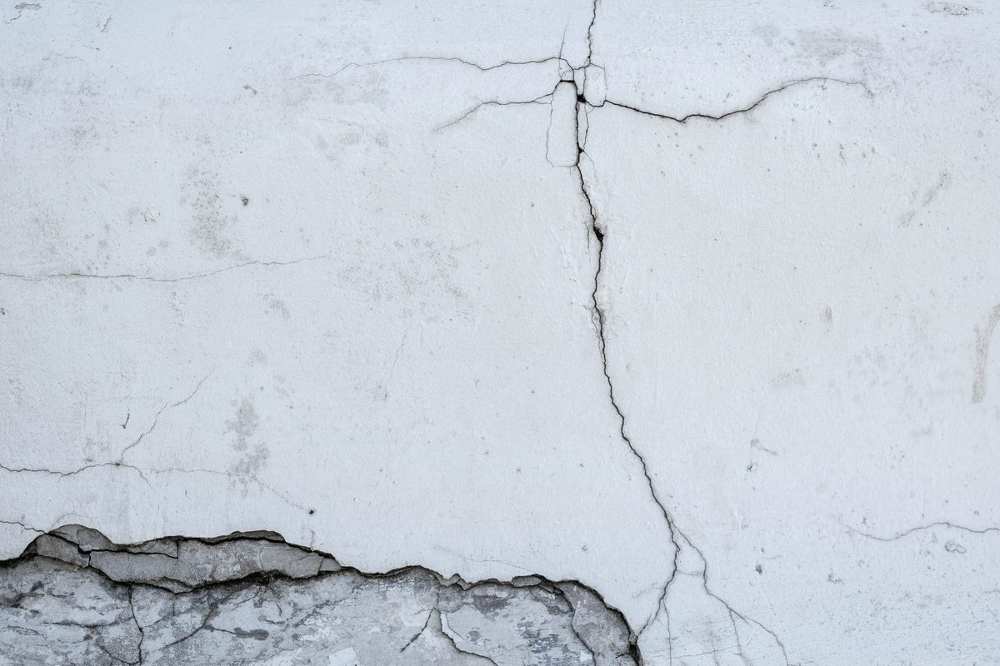
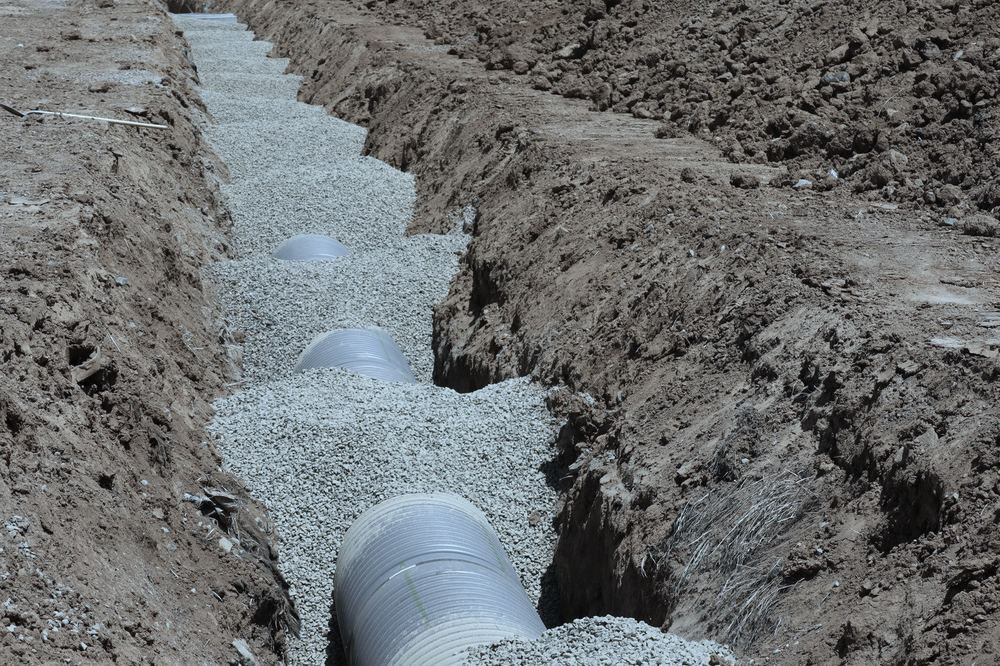
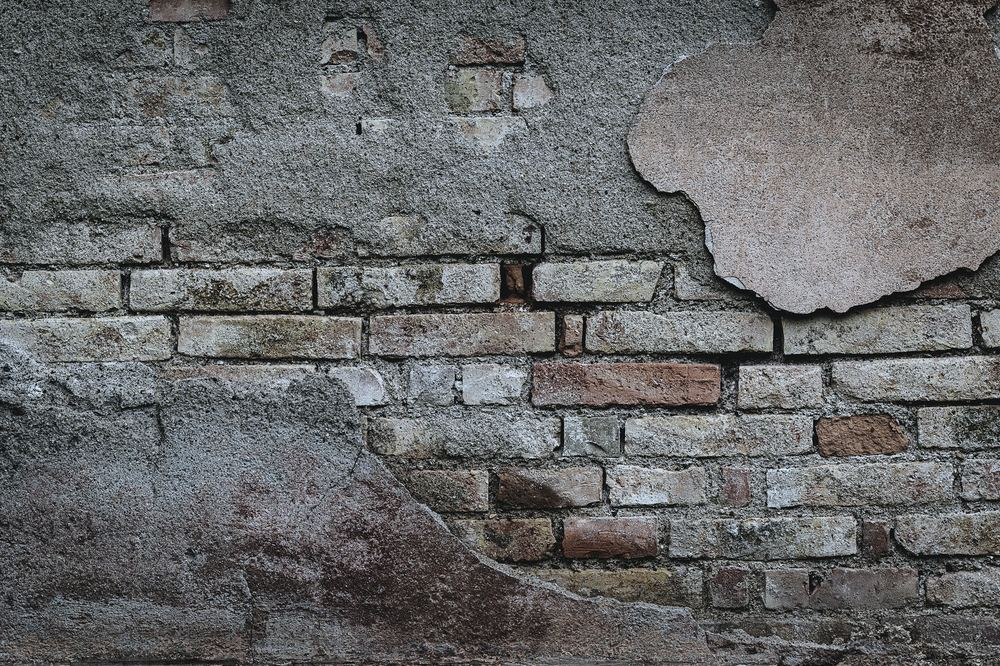
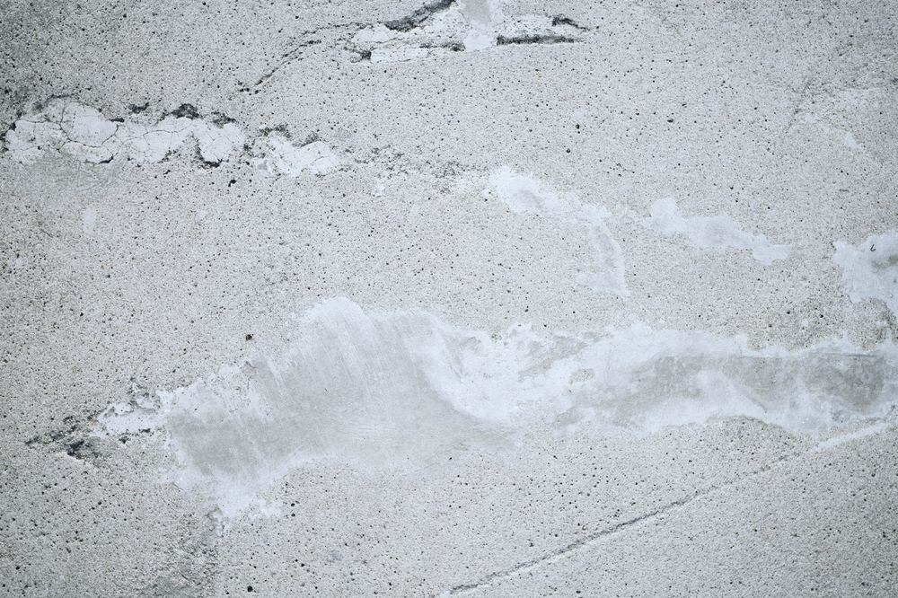

Wo kommt das Wasser her? Wir finden die Stelle – und dichten sie ab.
Schutz vor Feuchtigkeit von innen und außen. Nachhaltig, fachgerecht, sicher: Ihr TÜV-zertifizierter Fachbetrieb für Gifhorn, Wolfsburg und Braunschweig.
Gifhorn · Wolfsburg · Braunschweig · Peine · Salzgitter · Helmstedt und Umgebung
Wählen Sie die Stelle, an der es bei Ihnen feucht ist. Jede Nummer führt zum passenden Kapitel.
- Balkon, Terrasse & FlachdachAnschluss an die Hauswand, Belag und Entwässerung
- Sockel & SpritzwasserDie ersten 30 Zentimeter über dem Gelände
- Lichtschächte, Kellerfenster & RohrdurchführungenJede Öffnung in der Kellerwand
- RisseIn Kellerwand, Bodenplatte oder Decke
- Kellerwand außenDie erdberührte Außenseite der Kellerwand
- Kellerwand innen & HorizontalsperreDie Innenseite der Kellerwand und der Wandfuß
- Bodenplatte & Wand-Sohle-FugeDer Kellerboden und seine Fuge zur Wand
Balkon, Terrasse & Flachdach
Anschluss an die Hauswand, Belag und Entwässerung

Woran Sie es erkennen
Feuchte Flecken an der Decke unter dem Balkon. Abplatzender Putz oder Farbe an der Unterseite. Lose oder hohl klingende Fliesen, Ausblühungen in den Fugen. Nach Regen eine nasse Stelle innen an der Wand hinter der Terrassentür.
Sockel & Spritzwasser
Die ersten 30 Zentimeter über dem Gelände

Woran Sie es erkennen
Abplatzende Farbe oder Putz knapp über dem Gelände. Eine dunkle, nasse Zone nach Regen, die nur langsam abtrocknet. Grünbelag oder weiße Ausblühungen am Sockel. Innen Feuchte am Fuß der Erdgeschosswand.
Lichtschächte, Kellerfenster & Rohrdurchführungen
Jede Öffnung in der Kellerwand
Woran Sie es erkennen
Wasser im Lichtschacht nach starkem Regen. Feuchte Laibung oder eine nasse Wand unter dem Kellerfenster. Tropfspuren an Rohren und Kabeldurchführungen. Ausblühungen rund um den Hausanschluss.
Risse
In Kellerwand, Bodenplatte oder Decke

Woran Sie es erkennen
Eine feuchte Linie oder Tropfspur entlang eines Risses. Kalkausblühungen, die dem Riss folgen. Wasser, das bei Regen sichtbar aus dem Riss austritt. Risse an Arbeitsfugen von Betonwänden.
Kellerwand außen
Die erdberührte Außenseite der Kellerwand

Woran Sie es erkennen
Nasse Kelleraußenwände, besonders nach Regen oder bei hohem Grundwasser. Drückendes Wasser, das an der Wand herunterläuft. Schimmel oder muffiger Geruch. Eine defekte Alt-Abdichtung, die beim Aufgraben abblättert.
Kellerwand innen & Horizontalsperre
Die Innenseite der Kellerwand und der Wandfuß

Woran Sie es erkennen
Ein Feuchtehorizont, der von unten einige Zentimeter bis einen Meter die Wand hochsteigt. Salzausblühungen und abplatzender Putz am Wandfuß. Feuchte Wände, obwohl der Keller von außen nicht zugänglich ist, oder wenn eine schnelle Sanierung der Innenräume gewünscht ist.
Bodenplatte & Wand-Sohle-Fuge
Der Kellerboden und seine Fuge zur Wand

Woran Sie es erkennen
Wasser oder feuchte Ränder entlang der Kante zwischen Boden und Wand. Nasse Stellen im Boden nach Regen oder bei hohem Grundwasser. Kalkspuren an Arbeitsfugen. Feuchter Estrich, aufgequollene Bodenbeläge.
Warum schnelles Handeln entscheidend ist
Feuchtigkeit ist der größte Feind der Bausubstanz
Feuchtigkeit ist der größte Feind der Bausubstanz. Ob drückendes Grundwasser im Keller, undichte Außenwände oder Feuchtigkeitsschäden nach einer Leckage: Eine professionelle Abdichtung schützt den Wert Ihrer Immobilie und sorgt für ein gesundes Raumklima. Als Experten für Wasserschadensanierung bieten wir Ihnen maßgeschneiderte Lösungen für die Innen- und Außenabdichtung aus einer Hand.
Schimmelbildung
Bereits eine Woche nach dem Feuchtigkeitseintritt kann gesundheitsgefährdender Schimmel entstehen.
Schädigung der Bausubstanz
Putz blättert ab, Beton korrodiert und das Mauerwerk verliert an Stabilität.
Verlust an Wohnkomfort und Wert
Feuchte Räume sind nicht nutzbar und mindern den Wert Ihrer Immobilie drastisch.
In vier Schritten zum trockenen Gebäude
Von der Kontaktaufnahme bis zur Umsetzung
Kontaktaufnahme
Rufen Sie uns an oder schreiben Sie eine E-Mail. Beschreiben Sie kurz, wo es feucht ist; die Nummer der Stelle aus dem Schnitt genügt.
Beratung vor Ort
Wir begutachten den Feuchtigkeitsschaden direkt an Ihrer Immobilie, messen die Feuchte im Bauteil und suchen die Ursache. Ist die Herkunft unklar, übernimmt die Leckageortung der InTroTech GmbH.
Nachhaltiges Konzept
Wir erstellen einen maßgeschneiderten Abdichtungsplan: welche Stelle, welches Verfahren, nach welchem Regelwerk (DIN 18531, DIN 18533 oder WTA), mit Angebot.
Fachgerechte Umsetzung
Ihr Gebäude wird schnell und dauerhaft geschützt: abschnittsweise Ausführung, gesicherte Baugrube, Schutz für Haus und Garten. Den Schaden dokumentieren wir lückenlos, auch für Ihre Versicherung.
Ihre Vorteile mit der InTroTech GmbH
Nachhaltig. Fachgerecht. Sicher.
Die Bauwerksabdichtung ist ein Geschäftsbereich der InTroTech GmbH, TÜV-zertifizierter Fachbetrieb für Leckageortung, Trocknung und Sanierung in Gifhorn. Geschäftsführer sind Johann Warkentin, Jonathan Mangold und Adrian Mangold.
Alles aus einer Hand
Von der ersten Leckageortung über die Trocknung bis zur finalen, nachhaltigen Abdichtung und dem Wiederaufbau.
Zertifizierter Fachbetrieb
TÜV-zertifiziertes Unternehmen mit professionell geschultem Fachpersonal direkt aus Ihrer Region.
Modernste Verfahren
Wir nutzen ausschließlich praxiserprobte und normgerechte Materialien für maximale Langlebigkeit.
Versicherungsservice
Wir dokumentieren den Schaden lückenlos und unterstützen Sie bei der direkten Abwicklung mit Ihrer Versicherung.
- LeckageortungUrsache zerstörungsarm finden.
- Diese SeiteAbdichtungDen Weg des Wassers schließen.
- TrocknungBauteile und Räume kontrolliert trocknen.
- SanierungSchäden beheben, Räume wieder nutzbar machen.
Für Klimaanlagen und energetische Beratung gibt es die Sparte KlimaTech38. Alles über die Mutterfirma: introtech.de
Besichtigung anfragen
Wir kommen zu Ihnen: Gifhorn, Wolfsburg, Braunschweig und Umgebung
Handeln Sie, bevor größere Schäden entstehen. Haben Sie feuchte Flecken im Keller entdeckt oder planen Sie eine nachhaltige Sanierung? Kontaktieren Sie uns für eine kompetente und individuelle Beratung vor Ort.
Mo–Fr 08–18 Uhr · 24/7 Notruf unter derselben Nummer · oder per WhatsApp und E-Mail
Einzugsgebiet: Gifhorn · Wolfsburg · Braunschweig · Peine · Salzgitter · Helmstedt und Umgebung.
InTroTech GmbH · Zeisigweg 4 · 38518 Gifhorn · Route planen